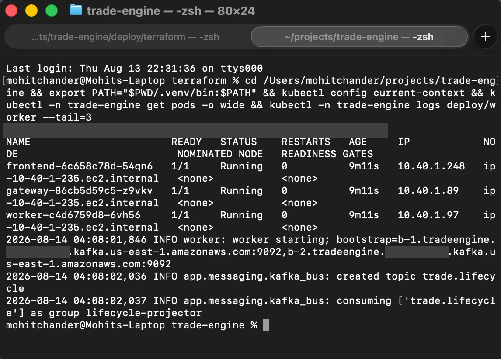

01 / Flagship
Trade lifecycle and reconciliation engine
When a trade goes through, both sides write down what they think happened. A break is when the two records disagree: a price off by a few cents, a settlement date a day late, or a trade one side never recorded.
My engine moves each trade through five stages and keeps every step in an append only event log. It lines our book up against the counterparty's with a FULL OUTER JOIN and sorts every mismatch into one of six break types. On its first run against real fills from a live brokerage API, it caught three price breaks.
| Lifecycle stages, placed to confirmed | 5 |
|---|---|
| Break types it detects | 6 |
| Real price breaks caught on the first live run | 3 |
| Automated tests, run in CI | 67 |
| Deploys to AWS (EKS, MSK, RDS) with Terraform, then torn down | 1 |
Python · FastAPI · PostgreSQL · Kafka · Kubernetes · Terraform · AWS

Modules
- gatewayTakes orders over REST
- lifecycleState machine and event log
- reconciliationThe join that finds breaks
- readQueries for the API and dashboard